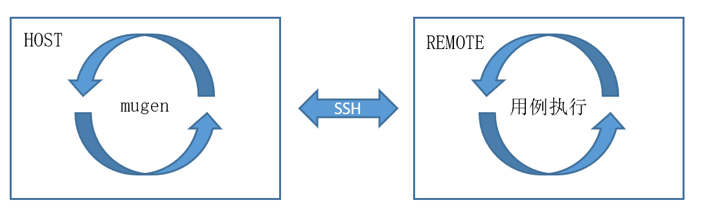

测试工程¶
openEuler Embedded采用openEuler社区开放的测试框架 mugen 作为社区开发者进行测试代码的编写和执行的框架。
mugen框架介绍¶
mugen框架执行流程¶
openEuler Embedded使用mugen框架时，由于嵌入式镜像中缺少mugen框架运行的必要依赖软件，嵌入式测试采用远程执行测试用例的方式，对系统进行测试。
mugen框架可支撑自动创建QEMU执行嵌入式系统测试，也可以支持远程设备的嵌入式系统测试

典型的测试执行流程¶
典型的测试执行过程
典型的测试执行包含了框架下载、依赖准备、启动qemu环境、编译测试用例、测试用例执行和qemu环境的清理。
# git下载mugen测试框架
git clone https://gitee.com/openeuler/mugen.git
cd mugen
# 安装依赖包，-e会检查和安装qemu依赖，如果不能通过yum安装则报错，需要自行安装qemu(版本5.0以上)
sh dep_install.sh -e
# 启动QEMU，默认使用qemu-system-aarch64拉起qemu，并完成测试套环境变量配置
# start 启动qemu
# --put_all 配置执行测试套时一次拷贝所有测试套用例至qemu
# --kernal_img_path openEuler Embedded kernel镜像zImage
# --initrd_path openEuler Embedded rootfs镜像openeuler-image-qemu-*.rootfs.cpio.gz
sh qemu_ctl.sh start --put_all --kernal_img_path <qemu-aarch64的zImage本地路径> --initrd_path <qemu-aarch64的rootfs本地路径>
# 如果在远端设备执行测试，则不需要执行QEMU启动，但需要进行测试套环境变量配置
# -c 配置测试套环境
# --ip 远端设备IP
# --port 远端设备SSH端口号
# --user 远端登录用户名
# --password 远端登录用户密码
# --put_all 执行测试套时一次拷贝所有测试套用例至远端
# --run_remote 配置该配置远端环境为执行用例环境
# bash mugen.sh -c --ip $ip --password $passwd --user $user --port $port --put_all --run_remote
# 如果测试套中包含需要编译的用例，则先编译测试用例，目前仅支持测试套整体编译
# 在执行测试用例编译前需要先执行sdk配置
bash mugen.sh -b <测试套名>
# 执行对应的测试套
# -f 执行测试套名称
# -s 远端执行测试套
bash mugen.sh -f <测试套名> -s
# 停止QEMU
sh qemu_ctl.sh stop
组合测试
组合测试是mugen框架推出的可自定义组合测试场景的功能，在嵌入式系统测试中组合测试可以用来定义不同的测试场景。
组合测试定义如下:
{
"export": {
"FIND_TINY_DIR":"/home/openeuler/tmp_image/tiny"
},
"env": [
{
"type": "host",
"name": "device_basic",
"ip": "<设备ip>",
"password": "<设备root密码>",
"port": "22",
"user": "root",
"run_remote": true,
"sdk_path":"/opt/openeuler/oecore-x86_64/",
"put_all":true
}
],
"combination": [
{
"name": "basic_test_for_device",
"testcases": [
{
"testsuite": "embedded_os_basic_test"
},
{
"testsuite": "embedded_os_basic_extra_test"
},
{
"testsuite": "embedded_security_config_test"
},
{
"testsuite": "embedded_application_develop_tests"
},
{
"testsuite": "smoke-basic-os",
"add": "oe_test_acl_001"
}
]
},
{
"name": "posix",
"testcases": [
{
"testsuite": "embedded_version_basic_tests",
"add": "oe_test_version_posix_suite_test_001"
}
]
}
],
"execute":[
{
"env":["device_basic"],
"combination":"basic_test_for_device"
},
{
"env":["device_basic"],
"combination":"posix"
}
]
}
export: 定义构建时所用的额外的环境变量
env: 定义执行测试的环境信息
combination: 定义测试套的组合
execute: 定义用于测试执行的测试环境和测试组合的组合
组合测试的使用：
# git下载mugen测试框架
git clone https://gitee.com/openeuler/mugen.git
cd mugen
# 安装依赖包
sh dep_install.sh -e
# 定义组合测试配置
vi ../combination/embedded_ci_test
# 执行组合测试
sh combination.sh -r embedded_ci_test
# 组合测试结果输出
sh combination.sh -p
其他mugen框架的具体介绍和使用详见 mugen 项目的介绍
openEuler Embedded测试套介绍¶
openEuler Embedded测试套已包含安全配置测试、OS基础测试以及tiny镜像测试。 未来会持续扩展测试套测试能力，计划增加基础软件包功能测试、特性专项测试等测试能力， 同时也欢迎更多的开发者参与到openEuler Embedded的测试中来，贡献更多的测试用例和测试套。
openEuler Embedded测试用例源码在mugen框架的 testcases/embedded-test 目录，每个测试套一个文件夹。
tiny镜像测试套¶
tiny镜像测试套，仅执行镜像的启动和简单的busybox测试。 与其他测试套不同，执行tiny镜像测试套时，不需要提前启动qemu，但需要配置测试套执行环境。
执行脚本如下：
# git下载mugen测试框架
git clone https://gitee.com/openeuler/mugen.git
cd mugen
# 安装依赖包
sh dep_install.sh -e
# 如果在远端设备执行测试，则不需要执行QEMU启动，但需要进行测试套环境变量配置
bash mugen.sh -c --ip 127.0.0.1 --password <local_host登录密码> --user <local_host用户名> --port <local_host ssh端口号> --put_all --run_remote
# 执行对应的测试套
bash mugen.sh -f embedded_tiny_image_test -s
OS基础测试套¶
OS基础测试套需要标准镜像支持，主要对OS的基础能力进行测试，需要提前启动qemu。
执行脚本如下：
# git下载mugen测试框架
git clone https://gitee.com/openeuler/mugen.git
cd mugen
# 安装依赖包
sh dep_install.sh -e
# 启动QEMU，如果需要测试arm标准镜像，则需要增加 --qemu_type arm
sh qemu_ctl.sh start --put_all --kernal_img_path <qemu-aarch64的zImage本地路径> --initrd_path <qemu-aarch64的rootfs本地路径>
# 执行对应的测试套
bash mugen.sh -f embedded_os_basic_test -s
# 停止QEMU
sh qemu_ctl.sh stop
嵌入式安全配置测试套¶
嵌入式安全配置测试套基于 社区嵌入式安全加固说明 要求进行测试。
嵌入式安全配置测试套同样需要标准镜像支持，需要提前启动qemu。
执行脚本如下：
# git下载mugen测试框架
git clone https://gitee.com/openeuler/mugen.git
cd mugen
# 安装依赖包
sh dep_install.sh -e
# 启动QEMU，如果需要测试arm标准镜像，则需要增加 --qemu_type arm
sh qemu_ctl.sh start --put_all --kernal_img_path <qemu-aarch64的zImage本地路径> --initrd_path <qemu-aarch64的rootfs本地路径>
# 执行对应的测试套
bash mugen.sh -f embedded_security_config_test -s
# 停止QEMU
sh qemu_ctl.sh stop
嵌入式基础开发测试套¶
嵌入式基础开发测试套，主要对SDK编译出的C、C++用户态程序以及内核模块进行基础测试
嵌入式基础开发测试套同样需要标准镜像支持，需要提前启动qemu。
执行脚本如下：
# git下载mugen测试框架
git clone https://gitee.com/openeuler/mugen.git
cd mugen
# 安装依赖包
sh dep_install.sh -e
# 启动QEMU，如果需要测试arm标准镜像，则需要增加 --qemu_type arm
sh qemu_ctl.sh start --put_all --kernal_img_path <qemu-aarch64的zImage本地路径> --initrd_path <qemu-aarch64的rootfs本地路径>
# 执行编译测试套
bash mugen.sh -b embedded_application_develop_tests
# 执行对应的测试套
bash mugen.sh -f embedded_application_develop_tests -s
# 停止QEMU
sh qemu_ctl.sh stop
Attention
在 社区嵌入式安全加固说明 中有部分安全加固项为方便开发和使用并没有启用，以下用例失败为正常。
列表如下：
oe_test_check_file_sys_protect_005
oe_test_check_network_firewall_001
oe_test_check_network_firewall_002
oe_test_check_ssh_config_002
oe_test_check_file_sys_protect_004